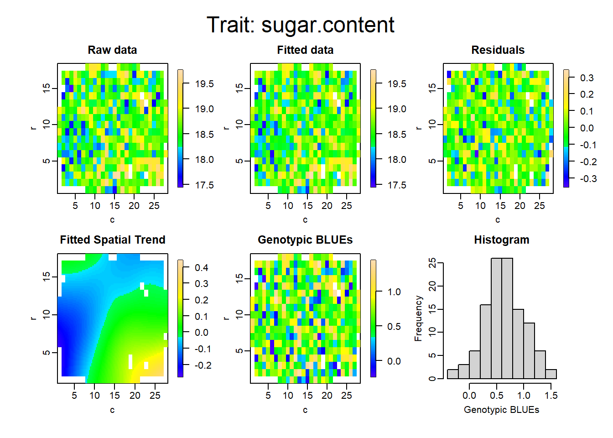

Chapter 6 Cross sites analysis in R.
We shall analyse the data from the TG association mapping panel to examine methods for analysing data across sites. For this we shall use the lmer package and (optionally) the emmeans package. Running emmeans here can add a lot to the run-time.
It would be better to use ASReml or GenStat, or other commercial packages to analyse these data, but lmer in R is free and readily available.
We shall compare variety effects from various types of analyses – BLUE / BLUP / one stage / two stage / weighted / and see what sort of a difference it makes?
6.1 BLUEs, BLUPs and one stage analysis
To start:
Load the
lme4package to your R.We could use
predictmeansto extract our predicted means. However, for just that purpose, it can take a while to run. Therefore, install and load the packageemmeans(Lenth 2020) instead, which runs faster for this method.Change your working directory to the location of today’s data files or copy today’s data files to your current working directory.
Read in the csv file “TG_all_data_for_stage_1.csv” and save as an object called TG
We need to convert our experimental design columns to factors, to do by running the following:
for (i in 1:5){
TG[,i]<-factor(TG[,i])
}Now inspect the data with:
summary(TG)
hist(TG$YLD_ADJ)
hist(log(TG$YLD_ADJ))
boxplot(TG$YLD~TG$SITE)
Any comments on the data?
The conventional way to analyse these data would be to first analyse each site (there are six here) separately, then take the line means from each site and analyse these in a second analysis fitting terms for varieties and sites with the interaction (varieties x sites) used as error. This approach, with minor modifications is still common. If there are no missing variety-site combinations, the estimates of average variety effects (the BLUEs) are identical to simply taking the average across sites. There is nothing wrong with it, but we ought to be able to do better. It is described as a two-stage analysis.
Our data is of individual plot measurements at all sites. We can mimic simple analysis by:
TG.2.stage.mimic<-lm(YLD_ADJ~VAR+SITE+SITE:VAR+SITE:REP,data=TG)We shall now repeat this analysis using lmer. Which terms should be fixed and which random?
I fitted the model below. For simplicity and time, I’ve ignored the row and column structure of the experimental designs. This may take a little time to run.
TG.res.1<-lmer(YLD_ADJ~(1|SITE)+(1|SITE:REP)+(1|SITE:VAR)+VAR,data=TG)Inspect the results:
summary(TG.res.1)
To inspect only the variance components we can use:
VarCorr(TG.res.1) on its own prints the standard deviations. Whereas, print(VarCorr(TG.res.1),comp=c("Variance") will give you variance:
print(VarCorr(TG.res.1),comp=c("Variance"))## Groups Name Variance
## SITE:VAR (Intercept) 28.042
## SITE:REP (Intercept) 13.391
## SITE (Intercept) 379.378
## Residual 62.049anova (TG.res.1)## Analysis of Variance Table
## npar Sum Sq Mean Sq F value
## VAR 385 108474 281.75 4.5407Gives us a test for the significance of the variety term.
The authors of lme4 have purposely excluded P values from these significance tests. Most people however do like to look at P values. There are several ways to obtain a P value with this test. The easiest is to download another package called lmerTest and load it to your R. Then next time when you run lmer() followed by anova() you will see an estimated P value.
To get out the variety means we use this function from emmeans (make sure you have this package loaded).
TG.BLUE<-emmeans(TG.res.1, ~ VAR)This gives a warning: you are advised to alter the options to emmeans: emm_options(pbkrtest.limit = 4688) but run time is then increased greatly, and in this case it makes no difference to the estimate of the BLUEs, so we shall ignore the warning.
We could have done this using predictmeans and not run into these warnings, however, it takes about 5 minutes to run. Let’s check that the BLUEs we can get directly from the lmer output agree with those from emmeans. There’s a slightly messy workaround for extracting the BLUEs directly from lme4, remember you have to add the first variety to the rest of the data:
#extract fixed effects and add intercept to each
TG.BLUE2<-as.data.frame(fixef(TG.res.1) + fixef(TG.res.1)[1])
#change name of column to BLUE
names(TG.BLUE2)<-("BLUE")
#the intercept (first variety) is x2 what it should be, so fix
TG.BLUE2[1,1]<-TG.BLUE2[1,1]/2
#plot data against emmeans method
plot(data.frame(TG.BLUE)[,2],TG.BLUE2$BLUE)
Looks convincing! Both methods produce the same results. In passing we can check that the means from emmeans agree with simply getting the fixed effects from lm.
plot(data.frame(TG.BLUE)[,2],fixef(TG.res.1))
Comments?
We want to save the BLUEs for comparison with others. We can do this using the write.table function:
write.table(TG.BLUE,"TG.BLUE.txt")
This saves a text file to your working directory, open it now and copy and paste it into excel for comparison later.
In principle, we could get the standard errors of differences of comparisons between variety pairs in the same way as for the sugar beet trial we analysed, I would recommend going back to predictmeans for this.
This is a one-stage analysis: we have taken the raw plot data and produced an across-sites BLUEs in a single analysis. We made some simplifications:
We have ignored row and column effects within each site.
We have assumed a constant error variance at each site. This is the most important omission.
What have we assumed about replicate effects over the whole analysis?
We have lumped countries and years together into a single term: sites.
Next, we shall repeat the analysis, but treat the varieties as random effects to estimate BLUPs. Paste the BLUPs into Excel, and record the variance components again
TG.res.2<-lmer(YLD_ADJ~(1|SITE)+(1|SITE:REP)+(1|SITE:VAR)+(1|VAR),data=TG)
print(VarCorr(TG.res.2),comp=c("Variance"))## Groups Name Variance
## SITE:VAR (Intercept) 28.066
## VAR (Intercept) 35.551
## SITE:REP (Intercept) 13.395
## SITE (Intercept) 379.817
## Residual 62.025To get just the random effects for variety rather than a long list of all effects:
TG.BLUP<-ranef(TG.res.2)$VAR+fixef(TG.res.2)How do the BLUPs compare to the BLUEs? Look at the correlations and plot:
cor(TG.BLUP[,1],data.frame(TG.BLUE)[,2])## [1] 0.9953824plot(TG.BLUP[,1],data.frame(TG.BLUE)[,2])To test the significance of random effects in mixed models, we use a likelihood ratio test (LRT). This is a very commonly used method in statistics and quantitative genetics. The difference between 2 x the log-likelihood of two models is approximately distributed as a chi-squared statistic with df (for the test) equal to the difference in df between the two models. This method is not appropriate for testing the significance of fixed effects in mixed models however. To get the log-likelihood of the model you should have just fitted:
logLik(TG.res.2)## 'log Lik.' -17385.84 (df=6)logLik(lmer(YLD_ADJ~(1|SITE)+(1|SITE:REP)+(1|VAR),data=TG))## 'log Lik.' -17499.43 (df=5)The likelihoods can be difficult to interpret. Higher values (i.e. less negative values) indicate a better fit to the data. The original mode therefore gave a better fit but used up 1 df to do this. This is always the case: adding parameters gives a better fit (a smaller error variance in linear modeling) but each parameter requires 1 df. In mixed modeling, each variance component has 1df – to estimate the variance.
The LRT is therefore 2 x (-17385.84 - -17499.43) with (6 - 5) df.
pchisq()
will return probabilities associated with chi-squared tests. There are two slight complications, Firstly pchisq returns the cumulative probability distribution: the left hand side of the distribution. You require 1 minus this for the significance test. Secondly, variance components are always positive, never negative (though their estimates can be). For this reason, the chi-sq test gives a false impression. We would always dismiss a negative component as non-significant. To adjust, for this asymmetry we halve the probability that you conventionally look up. So a p-value of 0.24 would be treated as 0.12. This isn’t as esoteric as you may think: the same correction is often required in linkage analysis. In this case, there was never any doubt that this interaction was going to be significant.
6.1.1 One stage analysis with weights
So far, we have treated each observation as if it was known with equal precision. This isn’t true. Some of the trials were better than others. The WT column in the data is a weight for each observation. It is defined as 1/variance of the observation. This is a very common weight to use. As an estimate I have used the error term from an earlier analysis of each trial.
SITE Ve
CALLOW_2011 72.63
FRANCE_2010 60.81
FRANCE_2011 23.92
LGE_2010 12.64
LGE_2011 25.41
NIAB_2010 14.72These were estimated from a full analysis which included row and column terms (just as in the sugar beet example) so it isn’t a perfect match for the model we are using. It serves to illustrate the method. We simply tell lmer to include the weights:
TG.res.3<-lmer(YLD_ADJ~(1|SITE)+(1|SITE:REP)+(1|SITE:VAR)+VAR,weights = WT,data=TG)emmeans will provide the BLUEs to compare results with the previous unweighted analysis.
Finally, we shall export the BLUPs for each site. As an alternative we could make the sites x varieties effect fixed and estimate BLUEs for each site, but in practice this would give us the same result as if we analysed each site separately in a two-stage analysis. There are two possible advantages to using BLUPs. Firstly we automatically get an estimate for every variety, including those with missing data. Secondly, these estimates will be shrunk towards the overall sites BLUE depending on the magnitude of the sites x varieties interaction. This seems reasonable: if there is no interaction then whatever site we want to select for, we should just select on the overall mean yet if the interactions are very large we should select on the estimated effect from the single site analysis. Treating the interaction as random, we are in effect borrowing information from the other sites depending on how high the correlation is between site means. (This is a very similar approach to treating variety means at each site as separate traits and selecting on one trait (i.e. site) while incorporating information based on the correlation with other traits (i.e. sites). We shall return to correlated characters later in the course.)
We just need to export the results from the analysis we have already carried out:
ranef(TG.res.1)$"SITE:VAR"
This is similar to the command we used to export the variety means, except by trial and error, I found I needed to include the quotation mark to prevent R interpreting ‘:’ as some form of separator.
The output is quite long so this time we shall export to a file. Make sure you know what your working directory is, and change it required.
getwd()
write.csv(ranef(TG.res.1)$"SITE:VAR","site.var.csv")
write.csv is a version of write.table and writes csv files (so they can be read directly into Excel).
After this, there is some tedious formatting of the results using vlookup since not all varieties are present in all sites. We require a column for each site, but we can’t simply cut and paste because not all varieties are present at all sites. I’ve done this for you. My results are in ‘results TG R.xlsx’ in the Chapter 5 data folder downloaded from the website. We want to compare the BLUPs we’ve estimated for each site with the means we can estimate from the site by site analyses. I have previously carried out the analysis for each site and results are also in the spreadsheet. To compare means we also need to add the average effect for each variety (from emmeans) onto the BLUP. I’ve also done this. Strictly, we should add on the average site (not variety) effect too, but as we are only interested in the correlation between sites this doesn’t matter.
I’ve done much of the tedious work for you here. It is the results that are important to think about. Correlating my shrunk estimates of variety effects with the individual site analysis I get:
CALLOW_2011 0.93
FRANCE_2010 0.94
FRANCE_2011 0.95
LGE_2010 0.87
LGE_2011 0.94
NIAB_2010 0.83What do you think? What has happened to the correlation between sites:
On site specific BLUEs
CALL11 FR10 FR11 LGE10 LG11 NIAB10
CALLOW_2011 1.00 0.39 0.46 0.23 0.57 0.52
FRANCE_2010 1.00 0.59 0.54 0.47 0.41
FRANCE_2011 1.00 0.51 0.48 0.40
LGE_2010 1.00 0.37 0.32
LGE_2011 1.00 0.53
NIAB_2010 1.00Average 0.45
On shrunk estimates:
CALL11 FR10 FR11 LGE10 LG11 NIAB10
CALLOW_2011 1.00 0.74 0.75 0.71 0.80 0.79
FRANCE_2010 1.00 0.83 0.82 0.79 0.79
FRANCE_2011 1.00 0.87 0.79 0.79
LGE_2010 1.00 0.79 0.79
LGE_2011 1.00 0.84
NIAB_2010 1.00Average 0.79
Discuss!
Compare the results here with the variance components we recorded earlier.
As far as I am aware, the only country in which shrunk estimates are routinely provided to growers is Australia. In the UK, BLUEs across sites and years, and at individual trial sites, are published.
There is a method for getting an estimate of the expected correlation in variety mean between sites (unshrunk) from the variance components. I shall describe it, but we shall return to this later in the course. Here, I estimate 0.38. The minimum and maximum observed values are 0.23 and 0.59 and the mean 0.45, so this estimate seems reasonable.
Most across-environment analyses, including the UK national and recommended list trials for example, do less analysis than we have done so far: they simply treat varieties as fixed, and estimate the BLUEs (though they won’t call them that). This will usually be done in a two-stage analysis, and there will be no weighting. Although the overall means vary little in our example, the predictions at each site can vary a lot. In addition, in many official trials, and breeders’ trials, the variance associated with varieties can be much smaller than in this genetically very variable GWAS panel. There is usually a much greater lack of balance between varieties over sites and years, so the difference between methods could be greater than we see in this example.
6.2 Weighted two-stage analysis
A comprehensive one-stage analysis, as implemented in Australia, will include the full experimental design at each site, with separate error variances for each site, analyse the data at site level with an AR1 x AR1 spatial model, incorporate information on relationships between varieties, and implement a more sophisticated G x E analysis than we have used here. Computation is in ASReml. That is beyond both the scope of this course and beyond me. Hans-Peter Piepho advocates use of the two-stage analysis, but weighting by the precision of the variety means, or better by the full variance-covariance matrix of variety effects. This has the advantage of making the analysis of individual sites much more flexible. Genetic relationships between varieties can also be incorporated. This too is beyond me. We shall carry out a simplified version:
Approximate weights are 1/(variance a variety mean). These could be obtained from the output of emmeans for each site. Emmeans reports the standard error of the variety mean, so the weight would be \(1/se^2\). We could analyse each site in turn here, fitting row and column effects in addition to replicates, or carrying out a spatial analysis. However we shall approximate the weights as r/(error variance) where we shall use the same error variance reported earlier.
Read in the csv file: ‘site_means_for_stage_2.csv,’ you should be able to say what each of the following commands does:
#to run the below line, you will need to remove: data/
TG2<-read.csv("data/site_means_for_stage_2.csv",header=T)
TG2$VAR<-factor(TG2$VAR)
TG2$SITE<-factor(TG2$SITE)
TG2.res.1<-lmer(YLD_ADJ_av~(1|SITE)+VAR,weights = WT,data = TG2)
TG2.BLUE<-emmeans(TG2.res.1,~VAR)6.3 AMMI
The additive main effect, multiplicative interaction model has become the standard method of examining genotype by environment interactions. It has some limitations, however. It cannot handle missing data and it assumes that the G x E terms, varieties x sites in our example, are fixed effects. There are random effects alternatives (more complicated), but we shall stick to the standard model.
We shall illustrate the approach using basic R commands. There are dedicated packages, both using R and standalone, but the basic approach will, I hope, help with understanding what is going on, at the expense of learning a few more R commands (but you can copy from here).
The csv file ‘AMMI.csv’ has variety means from the individual site analyses for the TG data. I’ve deleted varieties with missing data. Most of these were only present at a single site so would not contribute to the pattern of G x E. For varieties with only a single missing observation, I could have inserted the predicted effect for that site: mean + variety effect + site effect (i.e. assuming no interaction term at that site.)
I’ve also added countries of origin – deleting those for which country was unknown. The final data set has 371 varieties with three countries of origin, tested at six sites: two in each country of origin (in different years). We are interested in examining whether, on average, varieties tend to perform best at home, rather than playing away.
Read the data in and save as an object called: TG.AMMI
To simplify the analysis and inspection of results, we shall work on the performance of varieties averaged over their origin, rather than on the individual variety performance. As we are working on GxE, we also want deviations from the trial means and from the country of origin means. We are therefore aiming for a matrix of 3 rows and 6 columns. We could do these calculations in Excel, and in truth, like most of you I would have found that faster than working out the code below in R, but I’ve done it, and can copy it if I need to do a similar exercise again.
Before we produce the required deviations, let’s see if any differences between countries of origin appear genuine.
How can we test for this? (Answer is on the next page if you want to cheat, but have a think first).
Should we treat differences between varieties within countries as fixed or random effects?
Carry out the test for each trial site in turn. What do you make of the results?
anova(lm(TG.AMMI[,3]~COUNTRY,data=TG.AMMI))## Analysis of Variance Table
##
## Response: TG.AMMI[, 3]
## Df Sum Sq Mean Sq F value Pr(>F)
## COUNTRY 2 4478 2239.01 18.387 0.00000002449 ***
## Residuals 368 44813 121.77
## ---
## Signif. codes: 0 '***' 0.001 '**' 0.01 '*' 0.05 '.' 0.1 ' ' 1It is worth looking at variance components too – use lmer to split variance into between countries and within. The countries are a fixed effect rather than a random sample from a population – and they are definitely not exchangeable. However, the between country variance can be used as a simple means to quantify the relative magnitude of differences between and within countries, but we mustn’t get carried away in our interpretation: to infer how what we might find if we tested things in Hungary for example.
What is your interpretation of the variance components?
We shall now get a matrix of G x E terms: deviations from row and column averages. There are various ways of getting at this. This is one:
We shall use the command aggregate to group and average the data by country of origin.
country.means<-aggregate(TG.AMMI[,-1:-2],list(TG.AMMI$COUNTRY),mean)
country.means## Group.1 CALLOW_2011 FRANCE_2010 FRANCE_2011 LGE_2010 LGE_2011 NIAB_2010
## 1 DEU 98.27816 124.4816 90.46138 86.33333 82.68701 68.45862
## 2 FRA 96.65825 125.2517 93.64142 86.40730 78.70014 67.00697
## 3 GBR 105.71096 125.7438 96.34849 83.18342 84.21452 70.53014I can talk you through this command. Do you understand the [,-1:-2] reference? list is required to tell R that the term in the brackets is to be treated as a list – one of the R internal structures. Without it, you get an error. This is an annoying quirk of R: it is very fussy about the type of structure it is working on, but often the fix is very simple, as here, yet still takes some trial and error to identify.
cm.rm<- rowMeans(country.means[,-1])
cm.cm<- colMeans(country.means[,-1])
cm.mean<-mean(as.matrix(country.means[,-1]))It is reasonably obvious what these commands are doing, together with another example of a requirement to change the data type to get a command to run.
Now that we have the marginal means, we can work out the GxE terms: in effect the error term from a simple linear model. Can you see what this is? Writing the model down may help if it isn’t obvious.
The following bit of code - employing two loops, one nested inside the other, works out the deviations.
cm.GE<-country.means
for (i in 2:7) {
for (j in 1:3){
cm.GE[j,i]<-
cm.GE[j,i]+ cm.mean - cm.rm[j]- cm.cm[(i-1)]
}
}Let’s inspect cm.GE:
cm.GE## Group.1 CALLOW_2011 FRANCE_2010 FRANCE_2011 LGE_2010 LGE_2011 NIAB_2010
## 1 DEU -1.271135 -0.0109323 -2.355892 1.691808 1.4862798 0.45987222
## 2 FRA -2.385319 1.2648473 1.329880 2.271503 -1.9948595 -0.48605159
## 3 GBR 3.656454 -1.2539150 1.026012 -3.963310 0.5085797 0.02617936This has been fiddly and we want to check that the GxE terms are correct. There is a simple way of doing this. Do you know what it is? Answer is coming up.
colMeans(cm.GE[,-1])
rowMeans(cm.GE[,-1])
We now have the GxE terms for country in the data.table cm.GE. This is a matrix of 3 rows (countries) x 6 columns (sites).
We have just fitted a simple linear model to a table. We had row effects, column effects, and an overall mean and from these we make an estimate of the true value of each cell in the table. These are often referred to as the fitted values. The deviations from the fitted values (which are our GxE terms in our data) sum to zero over rows and to zero over columns. If we squared these deviations and added them up, that would be the error sum of squares, or residual sum of squares in an analysis of variance.
Rather than fitting a linear model, we can fit a multiplicative model. In this, the row effects and column effects are estimated in a different way, and are often called the row and column eigenvalues, or the principle components. The estimate of the true value of each cell in the table is made by multiplying the row effect and the column effect together. The deviations from the fitted values can be squared and added up and treated as a residual sum of squares as before. However, the row and column means are no longer zero. If we wanted, though it would be daft, we could use the row and column means of these residuals to estimate the residuals themselves. Rather than do this though, we can fit another multiplicative model, with a second set of row vectors and column vectors. The error sum of squares will be smaller than before, and the deviations would still not sum to zero. We could iterate in this manner as many times as we wished, but eventually we would get a perfect fit to the data matrix. In practice, we often find that two or three iterations are all that is required to get a very good fit (a very small error sum of squares). This process of iteration and getting closer and closer to a perfect fit is called Singular Value Decomposition (SVD). It is very very closely related to what we do in Principle Component Analysis or Principle Co-ordinate Analysis.
So what? Well suppose you had a matrix of 20 sites and 1000 varieties – 20 000 entries. It is very difficult to identify or interpret patterns in the data. But two multiplicative iterations of the type described about would reduce the data to 20 x 2 eigenvectors for sites and 1000 x 2 eigenvectors for varieties. We are now trying to interpret 2040 rather than 20,000 data points, which is still quite a task but potentially easier. The interpretation is helped, however, because we can plot the data in something called a biplot. This is just a scattergram of the eigenvectors from the first and second iterations. It is called a biplot not because it is a plot in two dimensions, but because it plots both row (variety) and column (site) effects together, and these often lead to easier interpretation. We’ll see this once we produce our own.
The second complication is that the solution to the multiplicative model is not unique. We could multiply every row eigenvalue, by any constant and divide the corresponding column eigenvalue by the same constant and we would get exactly the same prediction. The standard approach is to scale the sum of squares of row eigenvalues to 1 and independently scale the SS of the column eigenvalues to 1. When these two eigenvectors are multiplied together to estimate the values in the table, they then need rescaling. This rescaling factor is called the eigenvalue. That seems complicated, but the eigenvalue has the nice property that the bigger it is, the more variation is accounted for, so it is a measure of importance in its own right.
Back to the data. To carry out the SVD:
svd.cm.GE<-svd(cm.GE[,-1])Inspect. We can discuss it.
We could produce the biplot, as it’s just a scattergram, using the standard plot command, but there is a command biplot which helps interpretation:
biplot(svd.cm.GE$u,svd.cm.GE$v)That is a bit ugly though, so we’ll add some labels:
biplot(svd.cm.GE$u,svd.cm.GE$v,xlabs = c("DEU","FRA","GRB"),ylabs=colnames(cm.GE[-1]),cex=0.5,xlab="eigenvector 1",ylab="eigenvector 2")
Zoom the plot and we’ll discuss it: is there any visible evidence for country specific adaptation? To my mind, this has worked very well. I wish I had done this earlier as I would have included it in the publication.
Finally, with the TG data, we could have produced a biplot on the variety x sites matrix, without first summarising over countries. Following the same commands as above run:
TG.AMMI.rowMeans<-rowMeans(TG.AMMI[,3:8])
TG.AMMI.colMeans<-colMeans(TG.AMMI[,3:8])
TG.AMMI.mean<-mean(as.matrix(TG.AMMI[,3:8]))
TG.AMMI.GE<-TG.AMMI
for (i in 3:8) {
for (j in 1:371){
TG.AMMI.GE[j,i]<-
TG.AMMI.GE[j,i]+ TG.AMMI.mean - TG.AMMI.rowMeans[j]- TG.AMMI.colMeans[(i-2)]
}
}
colMeans(TG.AMMI.GE[,3:8])
rowMeans(TG.AMMI.GE[,3:8])Then we can run svd and plot the results:
svd.TG.AMMI.GE<-svd(TG.AMMI.GE[,3:8])
biplot(svd.TG.AMMI.GE$u,svd.TG.AMMI.GE$v,cex=0.5)Can you make sense of that? It is a little easier if we produce plots for each country of origin in turn. For example for the UK:
biplot(svd.TG.AMMI.GE$u[TG.AMMI$COUNTRY=="GBR",],svd.TG.AMMI.GE$v,cex=0.5,ylabs=colnames(TG.AMMI[,-1:-2]))
Any better?